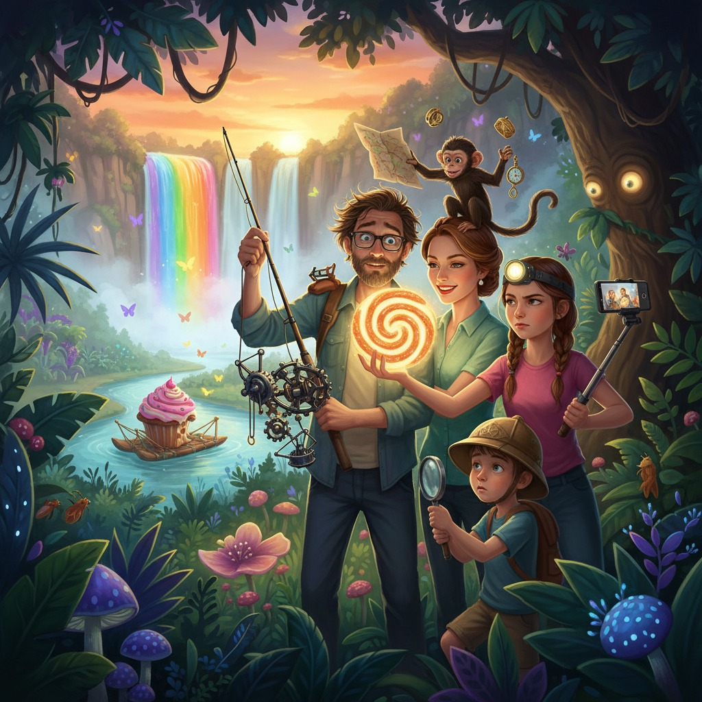

Если вы когда-нибудь захотите потеряться в Амазонских джунглях с максимальным комфортом и минимальной подготовкой — просто возьмите с собой семью Светлячкиных. Они сделают всё сами.
Аркадий Светлячкин шёл по тропе и думал о аттракционе. Это было его обычное состояние — тело идёт, ноги переступают, а мозг где-то конструирует что-то невероятное. На этот раз он мысленно строил «Карусель тропического хаоса» для парка в Сингапуре: платформы, имитирующие лианы, водяные пушки в виде анаконд, запах настоящей сырой земли из форсунок.
— Аркаша, — окликнула его Виктория, деловито шагавшая следом с блокнотом. — Ты снова несёшь не свой рюкзак?
— Что? — Аркадий посмотрел на лямки. — Нет-нет, мой. Зелёный.
— Твой тоже зелёный. И у Педру зелёный.
— Это просто совпадение.
— Аркаша.
— Я проверю на привале.
Педру — их проводник, семидесятилетний старик с лицом, похожим на кору мангрового дерева, — шёл впереди и что-то бормотал под нос. Педру был суеверен настолько, что перед выходом трижды плюнул через левое плечо, постучал по каждому дереву и отказался идти, пока Егор не снял с себя «проклятую кепку с жёлтым крокодилом».
— Духи Зелёного Мира не любят синтетику, — пояснил он тогда серьёзно.
— А полиэстер? — уточнила Милана, не отрывая взгляда от экрана телефона.
— Хуже всего.
Милана сняла всё на видео и подписала: «День первый. Наш проводник боится моей кепки».
Егор, восемь лет, в панаме и с блокнотом натуралиста, тащился рядом с Педру и методично донимал его вопросами.
— А Обезьяна-Богомол — она большая?
— С дерево, — буркнул Педру.
— А воет?
— Да.
— А светится?
Педру остановился и посмотрел на мальчика долгим взглядом человека, пережившего многое.
— Иногда.
Егор торжествующе записал в блокнот: «Светится. Подтверждено».
---
Привал устроили у реки. Виктория немедленно достала термос, бутерброды и контейнер с «Забывашками» — маленькими кексами, которые она на всякий случай всегда брала в путешествия.
— Может, дадим Аркаше парочку, — шепнула она Милане, — чтобы он вспомнил, где его рюкзак.
— Мам, это же просто кексы.
— Тссс. Не разрушай легенду.
Пломбир сидел на плече у Аркадия и с видом светского льва наблюдал за рекой. Пломбир был карликовым капуцином ростом с кулак и интеллектом, который семья оценивала примерно в полтора Аркадия. Он любил блестящее, круглое и всё, что плохо лежало.
Педру расстегнул свой рюкзак — достать рыболовные снасти. Пломбир немедленно навострил уши. Среди снастей блеснула серебристая пряжка на карте маршрута — красиво прорисованной, ламинированной, единственной.
То, что произошло дальше, Милана успела заснять целиком и впоследствии назвала этот ролик «Конец цивилизации за 11 секунд».
Пломбир прыгнул. Карта оказалась у него в лапах. Пломбир решил, что это игрушка. Педру закричал что-то по-португальски. Егор закричал «ПЛОМБИР, НЕТ», что возымело ровно нулевой эффект. Карта описала красивую дугу в воздухе и упала точно в середину реки, где течение немедленно потащило её к Атлантическому океану.
Все смотрели ей вслед.
— Ну, — сказала Виктория после паузы, — у нас же есть навигатор.
— Да! — Аркадий похлопал себя по рюкзаку и расстегнул его. Внутри обнаружились рыболовные снасти, нож, верёвка и чья-то фляга.
Долгая пауза.
— Аркаша.
— Это... не мой рюкзак.
— Это рюкзак Педру.
— Значит, у Педру мой.
Педру смотрел в свой рюкзак с выражением человека, которому только что сообщили, что он выиграл в лотерею дохлую рыбу. Достал планшет с навигатором. Посмотрел на Аркадия.
— Señor, — сказал он с достоинством, — вы забрали мою удочку. Я взял ваш космический аппарат.
— Техника недоразумения, — кивнул Аркадий. — Бывает.
---
Ночью Педру исчез.
Это выяснилось утром, когда Виктория поднялась первой и обнаружила пустую палатку, аккуратно сложенный спальник и записку на португальском. Милана перевела её через приложение:
«Духи предупредили меня. Зверь из тьмы рычал у моей палатки. Ухожу. Удачи вам, сумасшедшие».
— Какой зверь? — нахмурилась Виктория.
Егор потупился.
— Я... репетировал рёв Обезьяны-Богомола. Для исследования.
— В два ночи.
— Она ночная.
Виктория закрыла глаза, досчитала до десяти и открыла.
— Хорошо, — сказала она тоном человека, принявшего неизбежное. — У нас нет карты, нет связи, нет проводника. Зато есть навигатор, три умных человека, один умный капуцин и достаточно «Забывашек» на трое суток. Будем действовать.
— Мам, — Милана подняла руку, — а это можно снимать?
— Снимай. Только не падай в реку.
— Это был бы отличный контент.
— Это был бы мой инфаркт.
---
Они шли по навигатору, который Аркадий держал с видом штурмана авианосца. Правда, сигнал периодически пропадал из-за густого полога деревьев, и тогда навигатор предлагал им повернуть в сторону ближайшей бразильской автострады, до которой было двести километров.
— Может, я помогу? — предложила Виктория.
— Я справляюсь.
— Аркаша, мы идём по кругу. Вон то дерево с красным грибом мы уже видели дважды.
— Это другой гриб.
— У него на стволе царапина в форме ромба. Я сфотографировала.
Аркадий взял телефон. Посмотрел. Отдал телефон.
— Это другой ромб.
Виктория забрала навигатор.
Пока родители разбирались с маршрутом, Егор нашёл огромный след на мягкой земле у реки. След был широкий, с длинными пальцами и явно принадлежал... чему-то большому.
— ПАПА. МАМА. СМОТРИТЕ.
Все подошли. Даже Пломбир слез с плеча и деловито обнюхал отпечаток.
— Это тапир, — сказала Виктория.
— Это Обезьяна-Богомол, — возразил Егор.
— У тапиров такие следы.
— У Обезьяны-Богомола тоже.
Аркадий присел и задумчиво осмотрел след с видом эксперта.
— Знаете, — сказал он, — если сделать аттракцион «по следам мифических существ» — с настоящими слепками следов, звуковыми эффектами, имитацией джунглей... Это же золото.
— Аркаша, — ласково сказала Виктория, — мы сначала выберемся из настоящих джунглей. Потом придумаем ненастоящие.
— Логично.
---
К полудню джунгли начали меняться. Деревья расступились, воздух стал влажнее, и где-то впереди послышался шум воды — сначала тихий, потом нарастающий, похожий на аплодисменты тысячи ладоней.
— Это... — начала Милана.
— Водопад, — кивнула Виктория, сверяясь с навигатором.
— Радужный водопад?
— Судя по координатам — он самый.
Егор уже бежал вперёд, забыв про Обезьяну-Богомола, следы и всё на свете. Они выбрались на поляну — и замерли.
Водопад был... ну, слово «радужный» не передавало и десятой части. Он падал с тридцатиметровой скалы в круглое озерцо, и в брызгах постоянно висела радуга — не одна, а несколько, вложенных друг в друга, как матрёшки. Берега озера были покрыты белыми и синими цветами, а над водой — вот это уже никто не ожидал — летели бабочки. Светлячковые бабочки, которые называются именно так не потому что светятся, а потому что на крыльях у них пятна, похожие на живые огоньки.
Их были сотни.
Милана молча подняла телефон и начала снимать. Она не сказала ни слова четыре минуты — что для неё было абсолютным рекордом.
Егор стоял с открытым ртом.
Аркадий тихо доставал блокнот и рисовал что-то, бормоча себе под нос.
Виктория смотрела на водопад, потом посмотрела на мужа, потом на детей, потом — совсем тихо — засмеялась.
— Что? — спросил Аркадий.
— Мы потеряли карту, навигатор, проводника и дважды прошли мимо красного гриба, — сказала она. — И всё равно нашли.
— Светлячкины всегда находят, — серьёзно сказал Егор, не отрывая взгляда от водопада.
Пломбир вспрыгнул на камень у воды, увидел свое отражение в брызгах, явно принял его за другую обезьяну и начал с ней приветственно чирикать.
---
А потом Егор нашёл на камне у водопада что-то, от чего у него перехватило дыхание. Большое гнездо из листьев и лиан. И в гнезде — шерсть. Длинная, тёмная, явно обезьянья, но... странная. Слишком длинная для капуцина, слишком тёмная для паукообразной обезьяны.
— Мама, — прошептал он.
Виктория наклонилась и посмотрела.
— Это ревун, — сказала она. — Чёрный ревун. Очень редкий. Они делают такие гнёзда.
— Но...
— Но они ещё и ревут так, что дрожит земля.
Егор медленно повернулся к ней.
— Значит... Обезьяна-Богомол — это ревун?
— Возможно, именно это местные жители имели в виду всегда.
Егор долго молчал. Потом открыл блокнот и написал крупными буквами: «ТАЙНА РАСКРЫТА. Обезьяна-Богомол = чёрный ревун, редкий вид. Экспедиция успешна».
И добавил ниже, чуть меньше: «Хотя я всё равно немного надеялся».
Милана это тоже засняла. Подписала: «Мой брат — лучший криптозоолог, которого я знаю». Поставила сердечко.
---
Домой они вернулись на следующий день — навигатор всё-таки поймал сигнал, когда Аркадий случайно нашёл просеку, потому что засмотрелся на бабочку и упал с тропы в нужную сторону. Педру обнаружился на базовом лагере — живой, здоровый и с большой рыбой.
— Духи джунглей, — сообщил он торжественно, — велели мне подождать вас здесь.
— Конечно велели, — кивнула Виктория.
В самолёте Милана монтировала видео. Оно вышло через сутки после возвращения. Называлось: «Как моя семья потерялась в Амазонии и нашла радугу».
За первую неделю — двести тысяч просмотров.
Виктория нашла новый ингредиент — цветочную пыльцу редкого амазонского цветка — и придумала новый вкус «Забывашек»: «Тропический хаос с кокосом».
Аркадий сдал в работу проект «Джунгли внутри» — иммерсивный аттракцион с настоящими запахами тропического леса, следами мифических животных и финальным залом с имитацией радужного водопада.
Егор написал научную работу для школьного конкурса: «Криптозоология Амазонии: между мифом и биологией».
Занял первое место.
Пломбир украл у судьи с того конкурса золотую медаль и спрятал её в диване. Нашли только через месяц.
Светлячкины, в общем-то, считали, что всё прошло отлично.
← Все рассказы